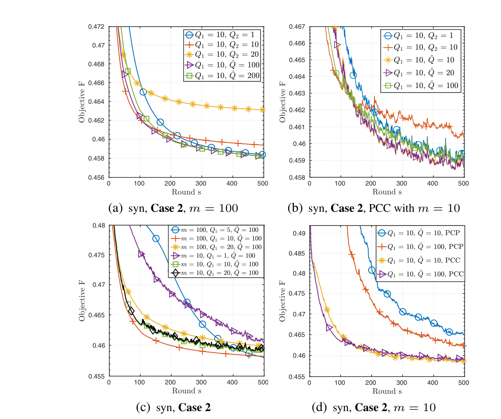
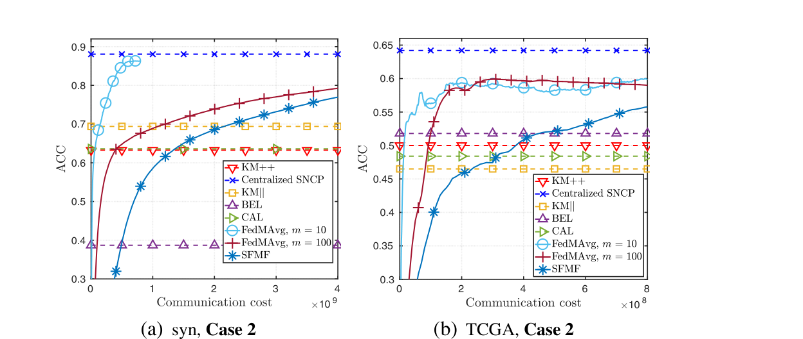
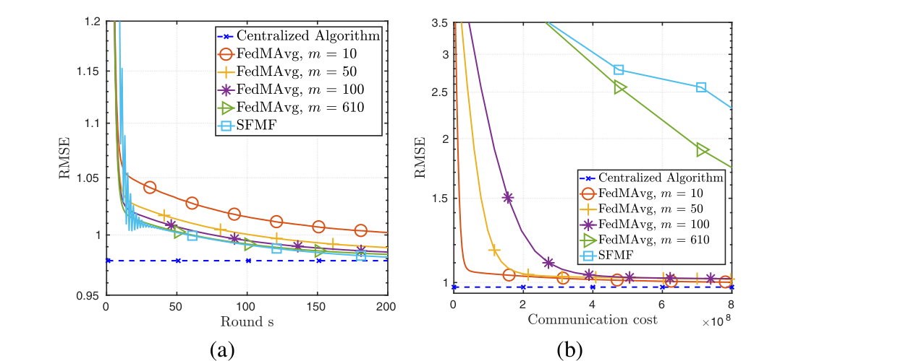

ICASSP 2021
Demystifying Model Averaging for Communication-Efficient Federated Matrix Factorization
TL;DR. Model averaging had not been applied to federated matrix factorization. FedMAvg combines alternating minimization with averaging, and communicating less often with fewer clients cuts cost on heterogeneous data.
Abstract
Federated learning (FL) is encountered with the challenge of training a model in massive and heterogeneous networks. Model averaging (MA) has become a popular FL paradigm where parallel (stochastic) gradient descent (GD) is run on a small sampled subset of clients multiple times before uploading the local models to a server for averaging, which has been proven effective in reducing the communication cost for achieving a good model. However, MA has not been considered for the important matrix factorization (MF) model, which has vast signal processing and machine learning applications. In this paper, we investigate the federated MF problem and propose a new MA based algorithm, named FedMAvg, by judiciously combining the alternating minimization technique and MA. Through analysis, we show that gradually decreasing the number of local GD and only allowing partial clients to communicate with the server can greatly reduce the communication cost, especially in heterogeneous networks with non-i.i.d. data. Experimental results by applying FedMAvg to data clustering and item recommendation tasks demonstrate its efficacy in terms of both task performance and communication efficiency.
FedMAvg
Federated matrix factorization (FedMF) partitions the observation matrix X across P clients, each holding a non-overlapping block. The shared factor W belongs to the server, and each client keeps its own local factor Hp, so the global objective sums a weighted local cost over all clients subject to W and every Hp lying in their constraint sets. This is harder than the federated learning objectives usually studied with model averaging1: the FedMF objective is non-convex and non-smooth, and it couples two blocks of variables, W and H, rather than one, so algorithms designed for smooth, single-block federated objectives do not directly apply.
FedMAvg addresses this by combining alternating minimization2 with model averaging1. In communication round s, each client starts from the server's broadcast factor Ws-1, updates its local factor Hp first, then updates its own copy of W, before a sampled subset of clients uploads their updated W back to the server.
- Broadcast: the server averages the W uploaded by the previous round's participating clients, projects the result onto the constraint set W, and broadcasts the new Ws to every client.
- Local factor update: each client runs Q1 steps of projected gradient descent on its local factor Hp, holding W fixed at Wsa.
- Local shared-factor update: each client then runs Q2s steps of gradient descent on its own copy of W, holding Hp fixed, where Q2s diminishes across rounds.
- Partial client communication: only a sampled subset of m clients, drawn with replacement in proportion to each client's share of the data, uploads its updated W to the server; clients that are not selected keep updating their own local variables rather than sitting idle.
The number of shared-factor steps Q2s = ⌊Q̂/s⌋ + 1 shrinks across rounds: early on, clients take more gradient steps on W to explore their local data, while later rounds take smaller steps so that client copies of W do not drift far from the server average before the next synchronization. The paper's convergence analysis shows that this diminishing schedule keeps the extra error terms caused by non-i.i.d. data bounded as the number of rounds grows, whereas using a constant Q2 greater than one lets those terms grow without bound, which slows convergence on heterogeneous data3.
Partial client communication (PCC) follows the same idea as FedAvg's partial client participation1: only m clients, with m much smaller than P, upload their model in a given round. Unlike FedAvg, however, the clients that are not selected keep updating their local variables instead of staying inactive, because in FedMF the local factor Hp stops improving if it is left stale for a full round. This distinction is why PCC can speed up convergence in FedMF even though sampling clients discards some of the information the server could otherwise use.
Experiments
Data Clustering
The clustering experiments use an orthogonal non-negative matrix factorization clustering model4 on a synthetic dataset (M = 2000, N = 10000, K = 20) and on The Cancer Genome Atlas (TCGA) gene expression data (K = 20, N = 5314, M = 5000), each split across P = 100 clients. Case 1 partitions samples uniformly and i.i.d.; Case 2 clusters the data into 100 groups and assigns one group per client, producing a highly unbalanced, non-i.i.d. partition.

Figure 1. Convergence of FedMAvg's objective value on the synthetic dataset under Case 2, for different local update lengths Q1 and Q2. (a)-(b) compare a constant Q2 against a diminishing schedule with full (m = 100) and partial (m = 10) client communication; a larger constant Q2 slows convergence, and the gap widens once communication is partial. (c) shows that increasing Q1 speeds convergence, with diminishing returns past Q1 = 10. (d) compares partial client communication (PCC), where non-selected clients keep updating, against partial client participation (PCP), where they do not; PCC converges faster because leaving a client's local factor stale for a full round hurts more in the two-block FedMF objective than in single-block federated learning.
On the TCGA dataset, the number of participating clients m has little effect on convergence under i.i.d. data but a much larger effect under non-i.i.d. data, and FedMAvg with PCC converges faster than the gradient-sharing FedMF baseline5 even when that baseline lets every client participate every round.
Clustering quality is evaluated by gradually raising an orthogonality penalty until the assignment stabilizes6, with accuracy compared against K-means++7 and the distributed baselines KM||8, BEL9, and CAL10. FedMAvg with m = 10 reaches a much higher clustering accuracy than the gradient-sharing baseline at a lower communication cost on both the synthetic and TCGA datasets, while KM||, BEL, and CAL exchange little communication but plateau at lower accuracy.

Figure 3. Clustering accuracy (ACC) versus communication cost on (a) the synthetic dataset and (b) the TCGA dataset, both under Case 2. FedMAvg with m = 10 approaches the centralized accuracy using far less communication than the gradient-sharing baseline, while KM||, BEL, and CAL need little communication but settle at lower accuracy.
Item Recommendation
The recommendation experiments use a matrix factorization model for recommender systems11 on 100,000 MovieLens ratings from 610 users on 9,724 movies (K = 40), following the same federated recommendation setup used to evaluate prior federated matrix factorization methods125. Each of the 610 users is treated as one client holding a single row of ratings, with 20% of entries held out and predicted by the trained model; performance is measured by root mean square error (RMSE) between predicted and true ratings.

Figure 4. RMSE versus (a) the number of communication rounds and (b) communication cost, comparing FedMAvg at four client-sampling sizes m against the centralized algorithm and the gradient-sharing baseline. FedMAvg quickly approaches the centralized RMSE even with m far smaller than 610 clients, and at m = 10 it reaches a low RMSE with substantially less communication than the gradient-sharing baseline.
Sampling only m = 10 of the 610 clients per round lets FedMAvg reach an RMSE close to the centralized solution's while transmitting far fewer model updates than the gradient-sharing baseline, which requires every client to participate in every round.
Open Question
Fewer local steps and fewer participating clients cut communication on heterogeneous matrix factorization, yet the factorization still improves even though sampling clients looks like it should add noise. Deriving when partial participation speeds the global factorization, rather than slowing it, remains open.
Citation
@inproceedings{wang2021demystifying,
title={Demystifying Model Averaging for Communication-Efficient Federated Matrix Factorization},
author={Wang, Shuai and Suwandi, Richard Cornelius and Chang, Tsung-Hui},
booktitle={46th IEEE International Conference on Acoustics, Speech and Signal Processing (ICASSP)},
pages={3680--3684},
year={2021},
organization={IEEE}
}Footnotes
- The step sizes are set adaptively each round from the client's current factors: the step for Hp uses half the largest eigenvalue of (Ws,0p)TWs,0p, and the step for W uses five times the largest eigenvalue of Hs,Q1(Hs,Q1)T. Training stops once the relative change in the objective value falls below 10-8, or after 500 communication rounds, whichever comes first. [↩]
References
- Communication-efficient learning of deep networks from decentralized data
H. B. McMahan, E. Moore, D. Ramage, S. Hampson, and B. A. Arcas, "Communication-efficient learning of deep networks from decentralized data," in Proc. ICML, Sydney, Australia, Aug. 2017, pp. 1-10. - Generalized low rank models
M. Udell, C. Horn, R. Zadeh, and S. Boyd, "Generalized low rank models," Foundations and Trends in Machine Learning, vol. 9, no. 1, pp. 1-118, 2016. - On the convergence of FedAvg on non-iid data
X. Li, K. Huang, W. Yang, S. Wang, and Z. Zhang, "On the convergence of FedAvg on non-iid data," in Proc. ICLR, Addis Ababa, Ethiopia, Apr. 2020, pp. 1-11. - Clustering by orthogonal NMF model and non-convex penalty optimization
S. Wang, T.-H. Chang, Y. Cui, and J.-S. Pang, "Clustering by orthogonal NMF model and non-convex penalty optimization," arXiv preprint arXiv:1906.00570, 2019. - Secure federated matrix factorization
D. Chai, L. Wang, K. Chen, and Q. Yang, "Secure federated matrix factorization," IEEE Intelligent Systems, vol. 1, no. 1, pp. 1-8, Aug. 2020. - Clustering by orthogonal non-negative matrix factorization: A sequential non-convex penalty approach
S. Wang, T.-H. Chang, Y. Cui, and J.-S. Pang, "Clustering by orthogonal non-negative matrix factorization: A sequential non-convex penalty approach," in Proc. IEEE ICASSP, Brighton, UK, May 2019, pp. 5576-5580. - K-means++: The advantages of careful seeding
D. Arthur and S. Vassilvitskii, "K-means++: The advantages of careful seeding," in Proc. ACM-SIAM SODA, Philadelphia, PA, USA, Jan. 2007, pp. 1027-1035. - Scalable k-means++
B. Bahmani, B. Moseley, A. Vattani, R. Kumar, and S. Vassilvitskii, "Scalable k-means++," in Proc. VLDB, Istanbul, Turkey, Aug. 2012, pp. 622-633. - Distributed k-means and k-median clustering on general topologies
M.-F. Balcan, S. Ehrlich, and Y. Liang, "Distributed k-means and k-median clustering on general topologies," in Proc. NeurIPS, Lake Tahoe, USA, Dec. 2013, pp. 1995-2003. - A practical algorithm for distributed clustering and outlier detection
J. Chen, E. S. Azer, and Q. Zhang, "A practical algorithm for distributed clustering and outlier detection," in Proc. NeurIPS, Montreal, Canada, Dec. 2018, pp. 2248-2256. - Matrix factorization techniques for recommender systems
Y. Koren, R. Bell, and C. Volinsky, "Matrix factorization techniques for recommender systems," Computer, vol. 42, no. 8, pp. 30-37, Aug. 2009. - Decentralized recommendation based on matrix factorization: A comparison of gossip and federated learning
I. Hegedűs, G. Danner, and M. Jelasity, "Decentralized recommendation based on matrix factorization: A comparison of gossip and federated learning," in Proc. ECML PKDD, Würzburg, Germany, Sep. 2019, pp. 317-322.